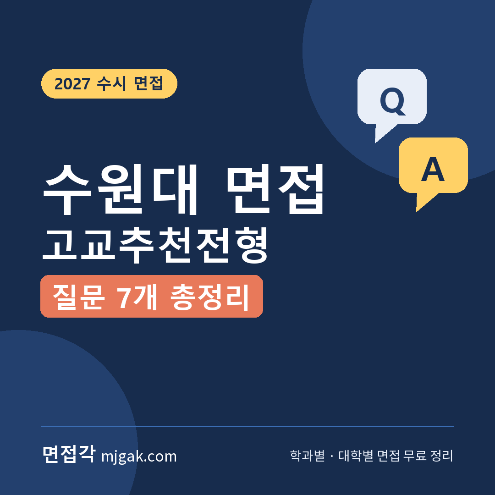
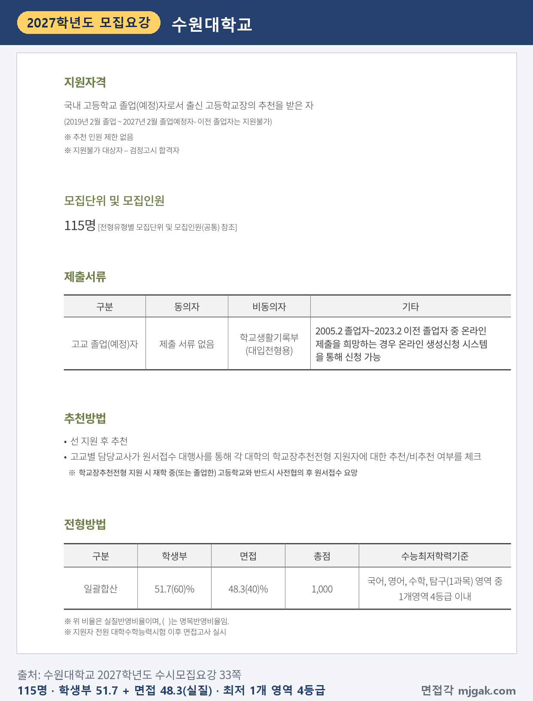
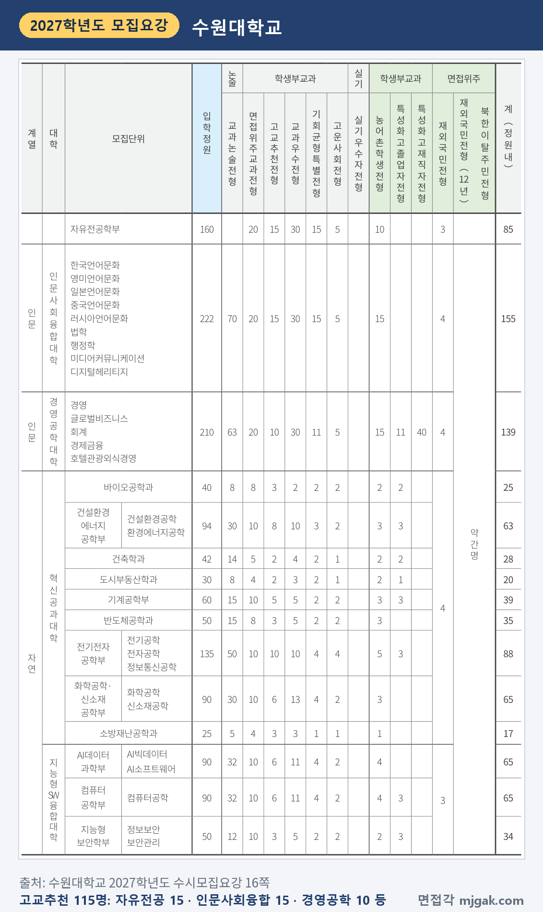
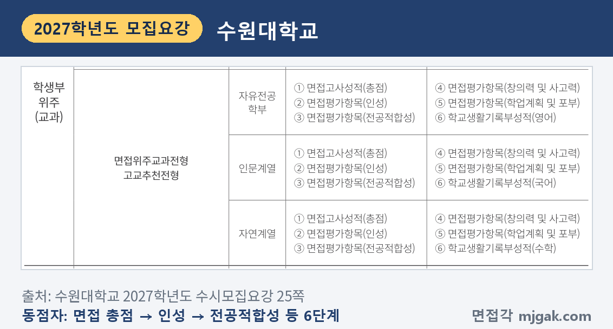
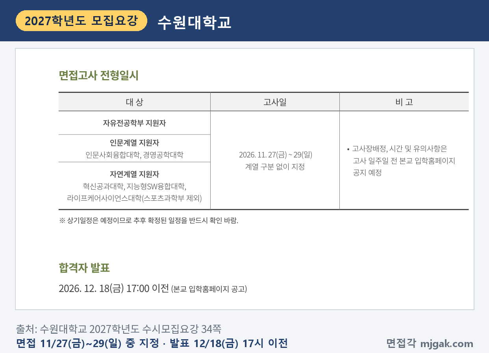
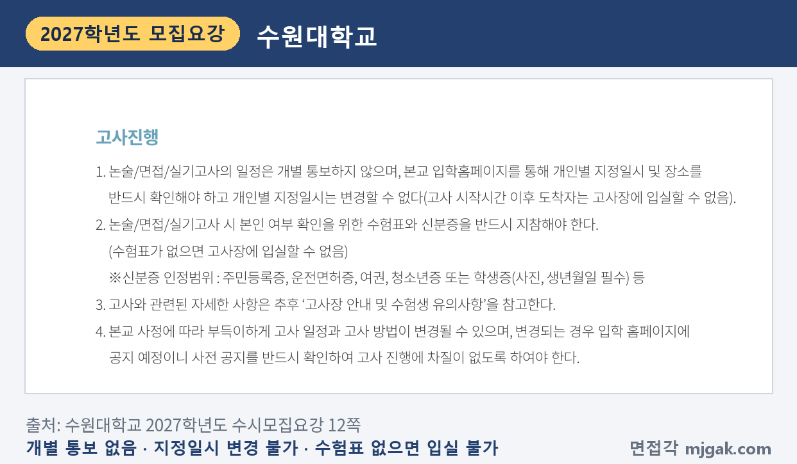
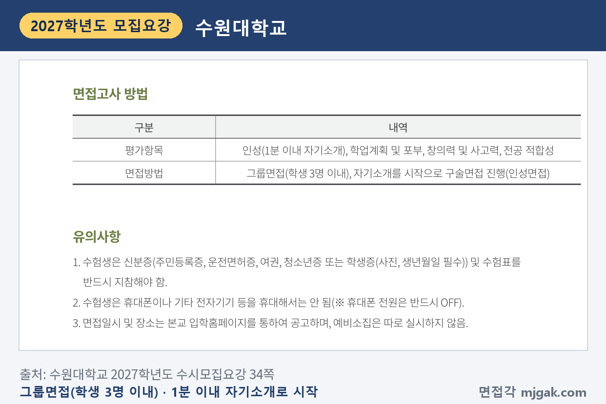
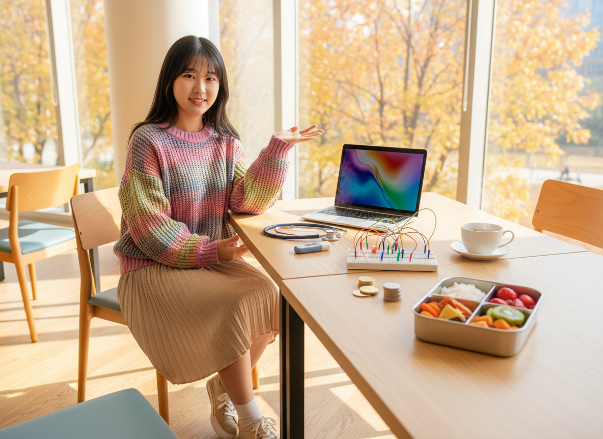
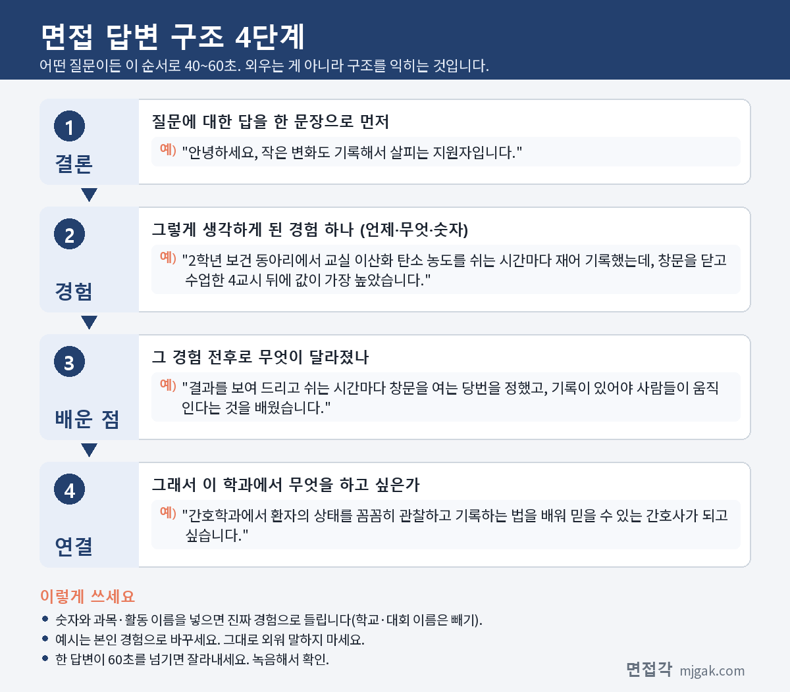
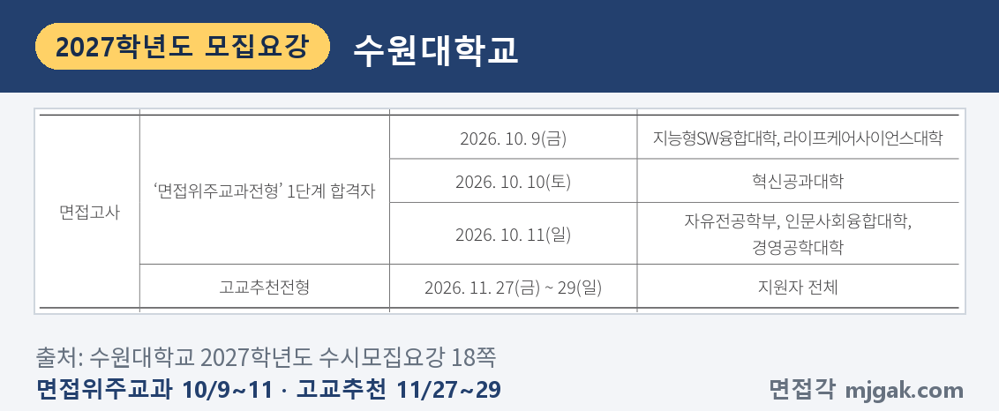

Ctrl+V (서식 유지됨)제목
본문 (이 영역 전체가 복사됩니다)
📷 여기에 이미지 넣기 — 썸네일 — thumb-suwon.png (대표 이미지로 지정)
수원대 고교추천전형에서 먼저 챙길 것은 면접의 무게입니다. 모집요강의 명목 비율은 학생부 60, 면접 40이지만 실질 반영비율은 학생부 51.7%, 면접 48.3%입니다. 1단계 없이 지원자 전원이 수능 뒤 면접을 보고, 면접일은 11월 27일(금)~29일(일) 중 개인별로 지정됩니다. 면접은 학생 3명 이내가 함께 들어가는 그룹면접이고, 1분 이내 자기소개로 시작합니다. 수능 최저는 국어, 영어, 수학, 탐구(1과목) 중 1개 영역 4등급 이내입니다. 이 글은 수원대학교 2027학년도 수시모집요강으로 전형 방법, 일정, 면접 방식, 자기소개와 예상 질문 6개, 준비 순서를 정리했습니다. 10월에 면접을 본 면접위주교과전형은 뒤에 짧게 묶었습니다. 고교추천전형 지원자가 읽으시면 됩니다.
1. 고교추천전형, 2027학년도에는 어떻게 보나
학생부교과 고교추천전형은 115명을 뽑습니다. 지원자격은 2019년 2월 이후 국내 고등학교 졸업(예정)자로서 출신 고등학교장의 추천을 받은 사람이고, 추천 인원 제한은 없으며 검정고시 합격자는 지원할 수 없습니다. 추천은 '선 지원 후 추천' 방식으로, 고교 담당교사가 원서접수 대행사를 통해 추천 여부를 체크합니다. 학생부 온라인 제공 동의자는 낼 서류가 없습니다(33쪽).
📷 여기에 이미지 넣기 — 캡처 1 — 수원대학교 2027학년도 수시모집요강 33쪽: suwon-2027-gochu-method.png
전형은 학생부와 면접을 한 번에 합산하는 일괄합산이고, 총점은 1,000점입니다. 학생부 51.7(60)%, 면접 48.3(40)%이며 괄호 안이 명목 비율입니다(33쪽). 학생부는 3학년 1학기까지, 계열별 4개 교과에서 교과별 상위 등급 5과목만 반영하고 진로선택과목은 반영하지 않습니다(20·33쪽). 과목 등급점수는 1등급 100점부터 5등급 92점까지 2점씩 낮아지고, 6등급 88점, 7등급 76점입니다(34쪽).
모집단위별 인원은 자유전공학부 15명, 인문사회융합대학 15명, 경영공학대학 10명, 전기전자공학부 10명, 건설환경에너지공학부 8명, 화학공학·신소재공학부·AI데이터과학부·컴퓨터공학부 각 6명, 기계공학부 5명, 바이오공학과·반도체공학과·소방재난공학과·지능형보안학부·아동가족복지학과·식품영양학과 각 3명, 건축학과·도시부동산학과·의류학과 각 2명이고, 간호학과는 10명으로 모두 115명입니다(16·17쪽).
📷 여기에 이미지 넣기 — 캡처 2 — 수원대학교 2027학년도 수시모집요강 16쪽: suwon-2027-gochu-units.png
동점자는 면접고사 총점, 면접평가항목 인성, 전공적합성, 창의력 및 사고력, 학업계획 및 포부 순으로 가리고, 마지막은 계열별 학생부 교과 성적(자유전공학부 영어, 인문계열 국어, 자연계열 수학)입니다(25쪽). 면접에 결시하면 불합격입니다(13쪽). 학교폭력 조치사항은 총점에서 4·5호 10점, 6·7호 20점, 8·9호 100점을 감점합니다(22쪽).
📷 여기에 이미지 넣기 — 캡처 3 — 수원대학교 2027학년도 수시모집요강 25쪽: suwon-2027-tie.png
2. 언제 보나: 11월 27일~29일 면접, 12월 18일 발표
일정은 날짜순으로 이렇습니다(수능일 외 18·34쪽). 수능에서 첫 면접일까지 8일입니다(이 글에서 계산한 값).
- 2026년 9월 7일(월)~11일(금): 원서접수
- 11월 19일(목): 수능
- 11월 27일(금)~29일(일): 면접, 계열 구분 없이 지정
- 12월 18일(금) 17:00 이전: 합격자 발표, 입학홈페이지
고사장 배정, 시간, 유의사항은 고사 일주일 전 입학홈페이지에 공지할 예정입니다(34쪽). 이 글에서 계산하면 11월 20일(금) 전후입니다. 예비소집은 없습니다(34쪽). 고사 일정은 개별 통보하지 않고, 개인별 지정일시는 바꿀 수 없으며, 고사 시작시간 이후 도착하면 입실할 수 없습니다(12쪽).
📷 여기에 이미지 넣기 — 캡처 4 — 수원대학교 2027학년도 수시모집요강 34쪽: suwon-2027-gochu-schedule.png
📷 여기에 이미지 넣기 — 캡처 5 — 수원대학교 2027학년도 수시모집요강 12쪽: suwon-2027-rules.png
3. 면접은 어떻게 보나
면접방법은 "그룹면접(학생 3명 이내), 자기소개를 시작으로 구술면접 진행(인성면접)"입니다. 평가항목은 인성(1분 이내 자기소개), 학업계획 및 포부, 창의력 및 사고력, 전공 적합성 네 가지입니다(34쪽). 항목별 배점과 면접 시간은 모집요강에 없습니다.
수험표와 신분증(주민등록증, 운전면허증, 여권, 청소년증 또는 사진·생년월일이 있는 학생증)을 반드시 챙기고, 휴대폰이나 기타 전자기기는 휴대하면 안 됩니다(휴대폰 전원은 OFF)(34쪽). 수험표가 없으면 입실할 수 없습니다(12쪽). 블라인드 면접이나 복장 규정은 고교추천전형 안내에 따로 적혀 있지 않습니다.
📷 여기에 이미지 넣기 — 캡처 6 — 수원대학교 2027학년도 수시모집요강 34쪽: suwon-2027-gochu-interview.png
4. 1분 자기소개와 예상 질문 6개, 답변법
질문 1은 모집요강에 적힌 면접의 시작인 1분 이내 자기소개입니다. 수원대 모집요강에는 면접 질문 예시가 없고, 질문 2~7은 나머지 평가항목(학업계획 및 포부, 창의력 및 사고력, 전공 적합성)과 인성면접이라는 안내로 정리한 예상 질문입니다. 예시 답변은 모집단위를 바꿔 쓴 가상의 예시이니 본인 경험으로 바꾸세요.
▶ 질문 1. 1분 이내로 자기소개를 해 주세요. (인성, 모집요강 명시)
왜 묻나: 면접이 자기소개로 시작하고, 평가항목 '인성'에 "1분 이내 자기소개"가 적혀 있습니다. 미리 알 수 있는 유일한 순서이니 가장 먼저 완성하세요.
답변 구조: 나를 한 문장으로 → 그걸 보여 주는 경험 하나 → 배운 점 → 지원 학과에서 할 일.
답변 예시 (간호학과):
"안녕하세요, 작은 변화도 기록해서 살피는 지원자입니다. 2학년 보건 동아리에서 교실 이산화 탄소 농도를 쉬는 시간마다 재어 기록했는데, 창문을 닫고 수업한 4교시 뒤에 값이 가장 높았습니다. 결과를 보여 드리고 쉬는 시간마다 창문을 여는 당번을 정했고, 기록이 있어야 사람들이 움직인다는 것을 배웠습니다. 간호학과에서 환자의 상태를 꼼꼼히 관찰하고 기록하는 법을 배워 믿을 수 있는 간호사가 되고 싶습니다."
주의: 소리 내어 50초 안팎에 끝나게 맞추세요. 성격 형용사를 나열하지 말고 장면 하나를 넣습니다.
▶ 질문 2. 이 학과에 지원한 이유는 무엇인가요? (전공 적합성)
왜 묻나: 평가항목 '전공 적합성'과 연결한 예상 질문입니다. 관심이 생긴 계기를 고등학교 수업에서 찾아 말하면 됩니다.
답변 구조: 지원 이유 한 문장 → 계기가 된 수업 장면 → 더 해 본 것 → 학과에서 배울 것.
답변 예시 (반도체공학과):
"작은 부품 하나가 전류의 방향을 정한다는 것이 신기해서 지원했습니다. 물리학Ⅰ에서 p-n 접합 다이오드는 한쪽 방향으로만 전류가 흐른다고 배웠고, 실험 시간에 발광 다이오드를 거꾸로 꽂으면 불이 켜지지 않는 것을 직접 확인했습니다. 그 뒤 반도체에 불순물을 넣어 성질을 바꾼다는 내용을 더 찾아 정리했습니다. 반도체공학과에서 소자가 만들어지는 원리를 제대로 배우고 싶습니다."
주의: "전망이 좋아서"로 끝내지 마세요. 과목 이름과 장면을 넣습니다.
▶ 질문 3. 입학하면 무엇을 공부하고 싶나요? (학업계획 및 포부)
왜 묻나: 평가항목 '학업계획 및 포부'와 연결한 예상 질문입니다. 관심 분야와 입학 후 해 볼 일을 구체적으로 말해야 합니다.
답변 구조: 공부하고 싶은 분야 → 관심이 생긴 장면 → 입학 후 해 볼 일 두 가지 → 기대하는 모습.
답변 예시 (자유전공학부):
"사람들이 돈을 어떻게 쓰는지 숫자로 읽는 공부를 하고 싶습니다. 경제 시간에 수요와 공급을 배우고, 확률과 통계에서 배운 표로 학교 매점의 요일별 판매량을 정리해 봤더니 시험 기간에 음료 판매가 눈에 띄게 늘었습니다. 입학하면 경영·경제 기초 과목과 데이터 분석 기초 과목을 함께 들어 보고 전공을 정하겠습니다. 숫자로 근거를 대는 사람이 되고 싶습니다."
주의: 자유전공학부로 입학하면 간호학과와 예체능계열은 이수할 수 없습니다(17쪽). 전공 선택 시기와 방법은 학과 안내에서 확인한 것만 말하세요.
▶ 질문 4. 생활 속 불편을 새로운 방법으로 해결해 본 경험이 있나요? (창의력 및 사고력)
왜 묻나: 평가항목 '창의력 및 사고력'과 연결한 예상 질문입니다. 문제를 어떻게 보고, 무엇을 바꿔 봤는지를 순서대로 말해야 합니다.
답변 구조: 불편했던 점 → 원인을 어떻게 찾았나 → 바꾼 방법 → 결과와 남은 한계.
답변 예시 (컴퓨터공학부):
"학급 청소 구역을 정할 때마다 같은 친구가 힘든 구역에 연달아 걸린다는 불만이 있었습니다. 정보 시간에 배운 리스트와 반복문으로 무작위 배정 프로그램을 짜면서, 지난주에 힘든 구역을 맡은 친구는 이번 주에 힘든 구역에 걸리지 않게 조건을 하나 더 넣었습니다. 한 학기 동안 불만이 거의 나오지 않았지만, 결석생이 생기면 다시 돌려야 하는 한계도 알게 됐습니다. 규칙을 먼저 정하고 코드를 짜는 습관이 생겼습니다."
주의: 결과만 자랑하지 말고, 아직 남은 한계도 한 줄 넣으세요.
📷 여기에 이미지 넣기 — 이미지 1 — 제미나이 생성: 늦가을 캠퍼스 라운지에서 청진기·LED 브레드보드·노트북·계산기와 동전·채소 도시락 옆에서 답하는 학생(실사) / "제미나이 프롬프트 1" · gem-suwon-1.png
(AI로 만든 이미지로, 실제 캠퍼스와 다를 수 있습니다)
▶ 질문 5. 학교에서 수업 시간 외에도 휴대폰 사용을 금지하는 규칙에 대해 어떻게 생각하나요? (창의력 및 사고력)
왜 묻나: '창의력 및 사고력'과 연결한 두 번째 예상 질문으로, 생각을 묻는 형태를 연습하려고 넣었습니다. 정답보다 이유와 반대쪽 의견을 다루는 순서가 중요합니다.
답변 구조: 내 입장 한 문장 → 이유 → 반대쪽 의견 인정 → 내가 제안하는 방법.
답변 예시 (인문사회융합대학, 행정학 관심):
"전면 금지보다는 학생이 함께 정한 규칙이 낫다고 생각합니다. 금지만 하면 몰래 쓰는 학생이 생기고 규칙을 지킬 이유를 스스로 찾지 못하기 때문입니다. 다만 쉬는 시간에도 휴대폰만 보느라 친구와 대화가 줄어든다는 걱정도 맞다고 봅니다. 그래서 학급 회의에서 점심시간 30분만 휴대폰을 넣어 두는 시간으로 정해 한 달 시험해 보고 다시 정하는 방법을 제안하겠습니다."
주의: 그룹면접에서 같은 질문을 차례로 받는다면(진행 방식은 모집요강에 없습니다) 앞사람과 의견이 같을 수 있습니다. 그때는 이유를 내 경험으로 바꿔 말하세요.
▶ 질문 6. 친구들과 의견이 갈렸을 때 어떻게 했나요? (인성)
왜 묻나: 인성면접이라는 안내와 평가항목 '인성'에 연결한 예상 질문입니다. 갈등보다 내가 한 행동과 결과를 말해야 합니다.
답변 구조: 상황과 갈린 의견 → 내가 한 일 → 정한 방법과 결과 → 그 뒤 바뀐 습관.
답변 예시 (경영공학대학):
"축제 때 학급 부스에서 음료 가격을 두고 '싸게 많이 팔자'와 '조금 비싸도 재료를 좋게 하자'로 의견이 갈렸습니다. 저는 두 가격으로 시식 설문을 받아 보자고 제안했고, 반 친구 서른 명 중 스물두 명이 재료를 좋게 한 쪽을 골랐습니다. 대신 양을 조금 줄여 가격 차이를 줄였고, 준비한 음료를 모두 팔았습니다. 말로 다투기보다 작게 시험해 보는 습관이 생겼습니다."
주의: 내가 이긴 이야기가 아니라, 다른 의견을 어떻게 받아들였는지를 넣으세요.
▶ 질문 7. 지원 학과와 관련해 가장 열심히 공부한 과목은 무엇인가요? (전공 적합성)
왜 묻나: '전공 적합성'과 연결한 예상 질문입니다. 교과 전형이라 과목 공부를 어떻게 했는지 말할 준비가 필요합니다.
답변 구조: 과목과 주제 → 궁금했던 점 → 스스로 해 본 공부 → 학과와 연결.
답변 예시 (식품영양학과):
"생명과학Ⅰ을 가장 열심히 공부했습니다. 에너지 대사 단원에서 1일 대사량에 기초 대사량과 활동 대사량이 들어간다는 것을 배우고, 제 하루 섭취 열량이 맞는지 궁금했습니다. 일주일 동안 급식 식단표의 열량과 집에서 먹은 음식을 적어 보니, 운동하지 않는 날에도 간식으로 비슷한 열량을 먹고 있었습니다. 식품영양학과에서 사람마다 다른 식단을 설계하는 법을 배우고 싶습니다."
주의: 교과서 설명을 길게 하지 말고, 궁금했던 것과 해 본 일에 시간을 쓰세요.
5. 답변은 이 4단계로 만드세요
경험을 묻는 질문은 결론 → 경험 → 배운 점 → 연결 순서로 40~60초 안에 말하세요. 학생 3명 이내가 함께 보는 면접이니 답 하나가 1분을 넘지 않게 연습합니다. 아래 도식은 질문 1의 자기소개를 4단계로 쪼갠 것입니다.
📷 여기에 이미지 넣기 — 도식 — structure-suwon.png
6. 면접위주교과전형은 10월에 면접을 봤습니다
학생부교과 면접위주교과전형은 193명을 뽑고, 1단계 학생부(교과) 100%로 5배수를 뽑은 뒤 2단계에서 1단계 성적 60%와 면접 40%를 합산하며 수능 최저는 없습니다(31쪽). 1단계 발표는 9월 22일(화), 면접은 10월 9일(금) 지능형SW융합대학·라이프케어사이언스대학, 10월 10일(토) 혁신공과대학, 10월 11일(일) 자유전공학부·인문사회융합대학·경영공학대학이었습니다. 합격자 발표는 11월 6일(금) 17:00 이전입니다(32쪽). 면접 방법과 평가항목은 고교추천전형과 같습니다(32·34쪽). 정원외 재외국민/북한이탈주민전형은 면접 100%이고 7월 21일(화)에 온라인 화상면접으로 봤습니다(19·69·70쪽).
📷 여기에 이미지 넣기 — 캡처 7 — 수원대학교 2027학년도 수시모집요강 18쪽: suwon-2027-schedule-all.png
7. 10월 31일(토)부터 면접 당일까지 준비 순서
10월 31일(토) ~ 11월 18일(수): 수능 공부가 먼저입니다. 주말에 질문 1 자기소개를 50초 분량으로 쓰고 소리 내어 맞춥니다. 학생부에서 수업 장면 두 개와 활동 세 개를 골라 질문 2·3·7의 초안을 만듭니다.
11월 19일(목): 수능.
11월 20일(금) ~ 22일(일): 가채점으로 국어, 영어, 수학, 탐구(1과목) 중 4등급 이내 영역이 있는지 확인합니다. 입학홈페이지에서 내 면접 날짜, 시간, 고사장 공지를 확인합니다(고사 일주일 전 공지 예정, 34쪽).
11월 23일(월) ~ 25일(수): 가족이나 친구 두 명과 셋이 앉아 그룹면접처럼 연습합니다. 같은 질문에 차례로 답해 보고, 앞사람과 답이 겹칠 때 내 경험으로 바꾸는 연습을 합니다. 녹음해서 60초를 넘는 답을 표시합니다.
11월 26일(목) 또는 지정일 전날: 표시한 답을 줄이고 수험표를 출력합니다. 가는 길을 확인합니다. 새 답변은 만들지 않습니다.
면접 당일(11월 27일~29일 중 지정일): 수험표와 신분증을 챙기고 일찍 도착합니다. 시작시간 이후에는 입실할 수 없습니다(12쪽).
12월 18일(금) 17:00 이전: 합격자 발표(34쪽).
8. 수원대 고교추천 면접 자주 묻는 것들
Q. 1단계 발표가 있나요?
A. 없습니다. 고교추천전형은 일괄합산이고 지원자 전원이 수능 이후 면접을 봅니다(33쪽).
Q. 면접위주교과전형과 고교추천전형에 같이 지원할 수 있었나요?
A. 수원대는 전형이 다르면 복수지원이 가능하고 그 예로 교과논술전형, 면접위주교과전형, 고교추천전형, 교과우수전형을 들었습니다. 수시 6회 제한에는 포함됩니다(11쪽).
Q. 면접 날짜를 바꿀 수 있나요?
A. 개인별 지정일시는 변경할 수 없고, 일정은 개별 통보하지 않으니 입학홈페이지에서 직접 확인해야 합니다(12쪽).
Q. 면접 복장은 어떻게 하나요?
A. 고교추천전형 면접 안내에 복장 규정은 없습니다. 지참물은 수험표와 신분증이고, 휴대폰 등 전자기기는 휴대할 수 없습니다(34쪽).
Q. 수능 최저는 어떻게 되나요?
A. 국어, 영어, 수학, 탐구(1과목) 영역 중 1개 영역 4등급 이내입니다(19·33쪽).
9. 면접 전날 체크리스트
□ 1분 이내 자기소개를 50초 안팎으로 소리 내어 말할 수 있다
□ 지원 이유를 과목 이름과 수업 장면으로 말할 수 있다
□ 입학 후 해 볼 공부 두 가지를 말할 수 있다
□ 생각을 묻는 질문에 입장·이유·반대 의견·제안 순서로 답할 수 있다
□ 앞사람과 답이 겹칠 때 쓸 내 경험을 두 개씩 준비했다
□ 입학홈페이지에서 내 면접 날짜, 시간, 고사장을 확인했다
□ 수험표와 신분증을 챙겼고, 휴대폰은 들고 들어가지 않는다
10. 같은 시기에 면접 보는 대학
수원대와 같이 지원했다면 이어서 보세요.
▷ 강원대 미래인재면접전형 면접 총정리 (11월 27일)
▷ 아주대 ACE전형 면접 총정리 (11월 22·28·29일)
▷ 경기대 KGU학생부종합전형 면접 총정리 (11월 29일·12월 5일·6일)
11. 함께 보면 좋은 글
고교추천전형 면접은 1분 자기소개로 나를 보여 주고, 학생 3명 이내가 함께 앉은 자리에서 내 경험으로 학업계획과 생각을 짧게 말하는 자리입니다.
※ 이 글의 내용은 수원대학교 2027학년도 수시모집요강에서 인용했습니다. 괄호 안 쪽수는 모집요강에 인쇄된 쪽수입니다. 질문 1(1분 이내 자기소개)은 모집요강에 적힌 면접 순서이고, 질문 2~7은 평가항목을 바탕으로 정리한 예상 질문으로 대학이 공개한 질문이 아닙니다. 면접 일시와 고사장은 수원대 입학홈페이지 공지를 꼭 확인하세요.
수원대를 포함한 76개 대학의 2027학년도 면접 정보와 71개 학과별 면접 질문·답변 예시, 대학이 공개한 실제 면접 기출을 무료로 정리한 사이트입니다. 회원가입 없이 바로 볼 수 있고, 질문을 무작위로 뽑아 60초 타이머로 연습하는 모의 면접도 있습니다.
태그 (#은 에디터가 자동으로 붙이므로 그대로 붙여 넣어도 됩니다)
넣을 이미지 목록 (docs/promo/img 폴더)










제미나이 프롬프트 1 — 늦가을 캠퍼스 라운지에서 청진기·LED 브레드보드·노트북·계산기와 동전·채소 도시락 옆에서 답하는 학생(실사) (4:3) — 제미나이에 그대로 붙여 넣어 이미지를 만드세요